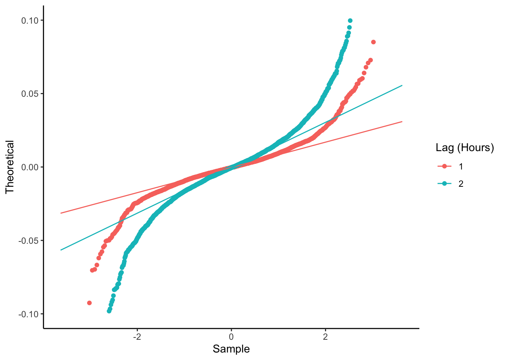
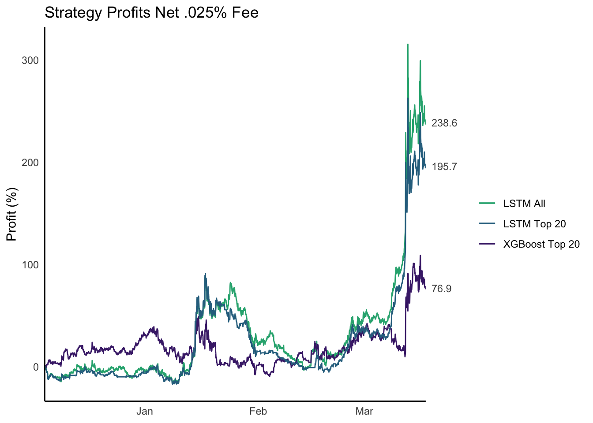

A Appendix A
A.1 Model Features
| Zcash Gtrend | Zcash Gtrend Ratio | ZEC Gtrend Ratio | Volume From | Volume To | Tweet Count | Mean Sentiment | Sentiment Retw. Weighted |
|---|---|---|---|---|---|---|---|
| 33 | 1.100000 | 2.133333 | 461959.8 | 12541.98 | 12 | 0.0573850 | 0.0000053 |
| 46 | 1.586207 | 1.551724 | 516757.6 | 14040.55 | 7 | 0.1481721 | 0.0833144 |
| 40 | 1.481481 | 2.296296 | 910020.4 | 24811.14 | 9 | 0.0196764 | 0.0000000 |
| 35 | 1.206897 | 2.620690 | 943465.4 | 25714.64 | 5 | 0.0097706 | 0.0908355 |
| 26 | 0.962963 | 2.518518 | 879135.5 | 24370.13 | 14 | 0.0735963 | 0.1326699 |
A.2 QQ Plot of Log Returns

A.3 Returns Net Fees

A.4 Correlations

Figure A.1: Correlations with Log Returns